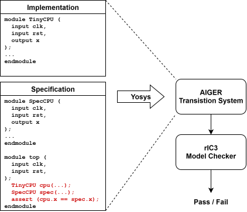
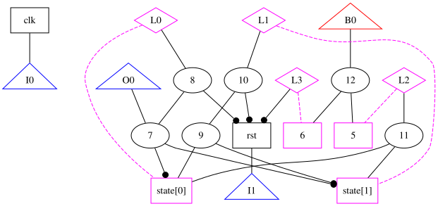
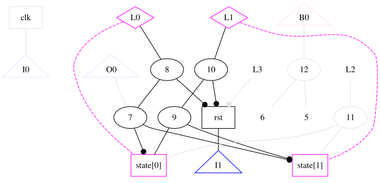
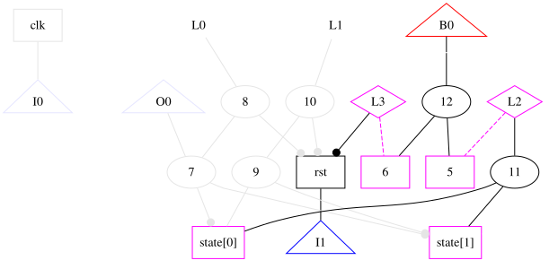
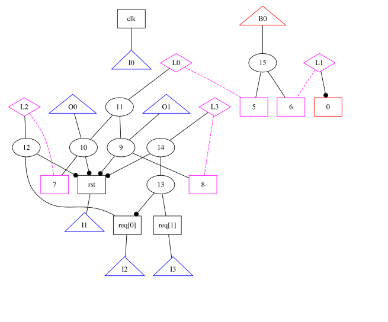
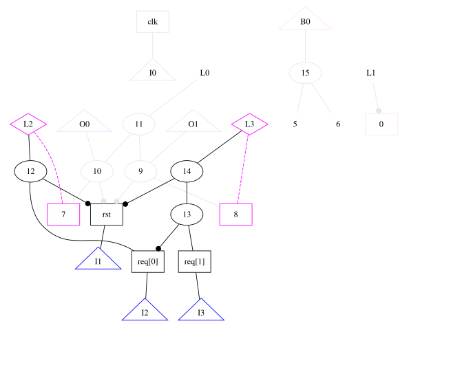
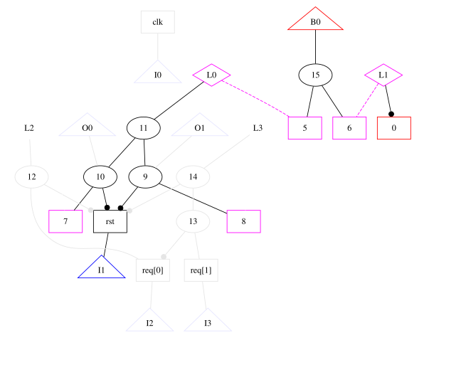
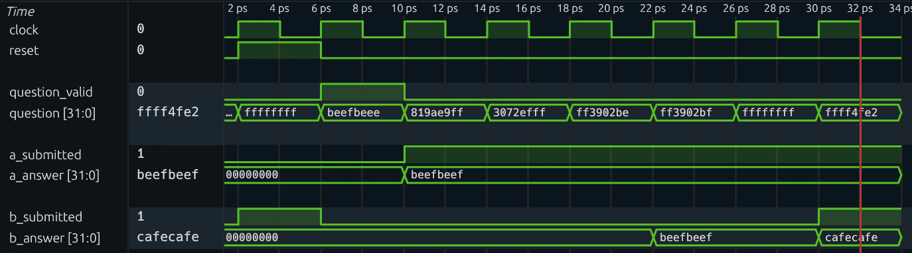

Formal Verification Recitation
Table of Contents
Formal verification is a well-explored research area and has been shown to be effective in hardware verification. In this recitation, we will provide an overview of one type of formal verification technique, called model checking. You will learn how to use a toolchain to perform bounded/unbounded model checking and find bugs on RTL code. It will give you a taste on how to perform automatic bug finding and understand the challenges of this topic.
We will start with a crash course on Verilog/SystemVerilog, a hardware description language which enables the specification of hardware circuits. Then we will give you a big picture of formal verification and how the toolchain will help acheive our goals. Next, we will present several examples to demonstrate the conversion from RTL code to model checker’s input. Finally, you will try to play with the model checking toolchain and automatically find bugs as you like.
Verilog Crash Course
Verilog is a hardware description language used to describe digital circuits (hardware), rather than software programs. Historically, Verilog came first (1980s) as a simulation-oriented HDL and later became widely used for synthesizable RTL. SystemVerilog was standardized later as an extension of Verilog that added stronger typing, better procedural blocks (always_comb, always_ff), interfaces, and richer verification features.
In practice, people still say Verilog informally even when writing SystemVerilog syntax.
It is useful to think of Verilog/SystemVerilog as two related languages in practice:
- Synthesizable RTL: code that can be compiled into hardware (logic gates/flip-flops/latches).
- Simulatable RTL: code used to model and verify behavior in simulators and formal tools, including constructs written mainly for verification.
For this recitation and the formal lab, we focus on the simulatable subset so you can read RTL, model circuit behavior, and write/check formal properties effectively.
Modules and Ports
A module is the fundamental building block in Verilog. The closest software analogue for a Verilog module is a function in C. Modules have input and output ports which serve as an external interface to the world. The operation of a module is described by the internal logic.
module adder (
input logic [31:0] a,
input logic [31:0] b,
output logic [31:0] y
);
assign y = a + b;
endmodule
The example above is a circuit definition: y is always driven by a + b.
Signals and Types
You will mostly use:
logicfor scalar or vector signals.- Bit vectors like
logic [31:0] x. - Arrays like
logic [31:0] regs [0:31]for register files.
In modern SystemVerilog code, logic is the preferred type and replaces old reg/wire style. However, we mention reg and wire as they may still appear in older Verilog code. Below is a table which summarizes the differences between logic, reg, and wire.
| Type | How It Is Driven | Usage |
|---|---|---|
wire | Must be driven continuously (e.g., by assign or as module outputs). Cannot be assigned in always blocks. | Combinational connections between modules or simple continuous equations in older style code. |
reg | Assigned in procedural blocks (always, initial). (Confusingly, does not always mean a physical register.) | Used in legacy code for both combinational (always @*) and sequential (always @(posedge clk)) logic assignments. |
logic | Assigned in procedural blocks (always_comb, always_ff), and can also be connected through module ports. | Preferred in modern designs; clarifies intent and offers better tooling support. |
Combinational Logic
There are two common styles:
assignfor simple expressions.always_combfor multi-line decision logic.
logic [31:0] next_pc;
assign pc_plus_4 = pc + 32'd4;
always_comb begin
next_pc = pc_plus_4; // default
if (take_branch)
next_pc = branch_tgt; // override
end
In always_comb, always set defaults before conditionals. This avoids accidental latch inference and makes intent clear.
Sequential Logic and Clocked State
Use always_ff @(posedge clk) for registers (state that updates on clock edges).
always_ff @(posedge clk) begin
if (rst)
pc <= 32'h0;
else
pc <= next_pc;
end
Important convention:
- Use blocking assignment
=inalways_comb. - Use non-blocking assignment
<=inalways_ff.
This rule of thumb prevents simulation bugs and is probably what you meant to write.
Conditionals
Conditionals are used anywhere you need data-dependent behavior in combinational logic. Use if for boolean decisions and case for selecting among multiple encoded values.
always_comb begin
out = 32'h0; // default
if (enable) begin
case (mode)
2'b00: out = a + b;
2'b01: out = a - b;
2'b10: out = a ^ b;
default: out = a;
endcase
end
end
Include a default case unless you intentionally want incomplete coverage. In synthesizable RTL, conditionals are implemented as multiplexers.
Literals and Bit Operations
Useful syntax you will see often:
- Sized literals:
32'hdeadbeef,4'b1010,8'd255 - Bit slice:
instr[31:20] - Concatenation:
{hi, lo} - Bitwise ops:
&,|,^,~ - Logical ops:
&&,||,!
Practice Questions
https://hdlbits.01xz.net has many helpful practice problems for learning Verilog.
- https://hdlbits.01xz.net/wiki/Problem_sets
- https://hdlbits.01xz.net/wiki/Alwaysblock1
- https://hdlbits.01xz.net/wiki/Alwaysblock2
- https://hdlbits.01xz.net/wiki/Dff8r
Formal Verification
The starter code of the recitation is here.
Please run the code on our lab machine dobby.csail.mit.edu. Log in with the same user account as previous labs. Clone the repo and execute ./setup.sh to setup the environment.
The Big Picture
The general idea of formal verification is far from complex. As shown in the picture below, we have 1) an implementation of the hardware (e.g., verilog code, miniSpec code), which can be complex and potentially buggy, and 2) a clearly-defined specification of what we expect the hardware to do, like the RISC-V specification. The goal of formal verification is to check the implementation matches the specification under all possible inputs to the hardware.
Model Checking = Cover All Reachable States
Consider the target hardware as a state machine. The concept of model checking is to check: all reachable states of the system satisfy certain properties/specifications. One approach is to do exhaustive search, but we may suffer from serious scalability issues, especially when the input space is huge. Instead, we rely on model checking algorithms and the underlying SAT/SMT solvers to automatically search the space in an efficient and smart way.
From SystemVerilog to Model Checker
Below is an overview of the whole toolchain:

Suppose we have an RTL design written in SystemVerilog. We must first write down the specification or the property we want to check. We will simply add assert statements in the SystemVerilog source code, which will later be compiled together with the RTL design and passed to the model checker. However, extra logics may be added in order to represent complex specification.
Most model checkers, such as rIC3 that we’re using, do not work on RTL design directly. Instead, they usually accept a transition system, such as AIGER, which can be translated from SystemVerilog code using Yosys. In short, AIGER represents a circuit as a network of AND gates and inverters (an And-Inverter Graph), augmented with latches to capture sequential state, inputs for free variables, and bad-state signals that encode the property being verified. In Exercise 1 we will use two examples to help you understand how AIGER works.
Finally, the verification task represented in AIGER format is sent to the model checker. It supports both unbounded model checking and bounded model checking:
- Unbounded model checking (UMC): Verify that the property holds for unlimited number of cycles.
- Bounded model checking (BMC): Verify that the property holds within certain cycles.
If a violation is found, a counterexample trace is exported for examination.
Exercise 1: Simple Examples
Divide-3 State Machine
You can find the source code at src/divide-3. This is the example from the lecture: A 2-bit state transitions in the order of 0 -> 1 -> 2 -> 0 -> 1 -> 2 -> ... and never reaches 3. The property we’re checking is simply that the state is never 3.
module top (
input logic clk,
input logic rst,
output logic q
);
logic [1:0] state, nextstate;
always_ff @ (posedge clk) // state register
if (rst) state <= 2'b00;
else state <= nextstate;
always_comb // next state logic
case (state)
2'b00: nextstate = 2'b01;
2'b01: nextstate = 2'b10;
2'b10: nextstate = 2'b00;
default: nextstate = 2'b00;
endcase
always_comb // output logic
q = (state == 2'b00);
always_ff @ (posedge clk) // assertion
if (!rst)
assert (state != 2'b11);
endmodule
Run make aiger DOT=1 DUV=divide-3 to compile the design into AIGER format. The toolchain outputs the AIGER file to build/top.aag, which is barely interpretable. Luckily, with the help of aigtodot, we can output a visualization of the AIGER transistion system at build/top.dot. You can view it with online dot viewer such as Graphviz Online, or with a VSCode plugin Graphviz Interactive Preview. We have rendered the diagram below for you convenience.



The shapes in the diagram are interpreted as follows:
- Oval: AND gate. The network is composed mostly of AND gates, where each node’s value is the AND of nodes pointed by its fanin edges (i.e., edges that are vertically BELOW the node in the figure). A dot on an edge indicates that the value is inverted before participating in the AND operation.
- Black box: Externally driven input.
- Magenta box: Latch.
- Triangle: Labels annotating the connected node. They are not actual nodes.
The update logic describes how the latches are updated. Specifically, node 8 and node 10, pointed by label L0 and label L1, are the next-cycle value of latch state[0] and latch state[1], respectively. The check logic formulates the assertion, or equivalently, what are the “bad” states. Specifically, if node 12 (pointed by label B0) is high, the property is violated.
Now, try running make bmc and make umc to initiate BMC and UMC on the AIGER transistion system. You should see that the proof is successful.
2-Bit Arbiter
Here’s another example of a 2-bit arbiter. You can find the code under src/arbiter. There are two ports, port 0 and port 1, which make requests through req[0] and req[1]. In each cycle, the arbiter grants port 0 if req[0] is high, or grants port 1 if req[0] is low but req[1] is high. In other words, port 0 has higher priority than port 1.
module top (
input wire clk,
input wire rst,
input wire [1:0] req,
output reg [1:0] grant
);
wire g0 = req[0];
wire g1 = ~req[0] & req[1];
always_ff @(posedge clk or posedge rst) begin
if (rst)
grant <= 2'b00;
else
grant <= {g1, g0};
end
always_ff @(posedge clk) begin
assert(!(grant[0] && grant[1]));
end
endmodule
Run make aiger DOT=1 DUV=arbiter to compile the design into AIGER format. Please try to analyze the AIGER on your own. Then, you may test running make bmc and make umc.



Exercise 2: Fix a Buggy Design and Analyze the Invariant
With the knowledge of how the framework works, let’s try it on a slightly more complex example.
Let’s look at src/toy/toy.sv, a top module which models two students, Alice and Bob, taking a quiz of “x + 1 = ?”. Repeatedly, they are given a 32-bit unsigned integer and are asked to calculate the integer plus one using unsigned addition. The two students may submit their answer asynchronously, and the next question will not arrive until both of them have submitted.
The two students are implemented in src/toy/alice.sv and src/toy/bob.sv.
- Alice is a fast thinker who submits immediately. When a question comes, Alice’s answer will be available to the top module in the next cycle.
- Bob is a slow thinker who submits after a few cycles. When a question comes, he writes his tentative answer on the scratch. Three cycles later, he uploads his answer to the answer register. Two more cycles later, he hits the submit button.
Guiding Questions
To familiarize yourself with the codebase, try to answer the following questions.
- Look for
resettedand its usages in the top module. How is it updated? What does it mean whenresetted ^ resetis always true?- Describe the update logic of
question_valid. How does it synchronize Alice and Bob when they might submit their answers at different time?- Think about the meaning of the predicate
!resetted || !a_submitted || !b_submitted || a_answer == b_answer. This implicitly encodes a conditional assertion. Can you express the predicate in natural language?Click to reveal the answer
resettedis initially low and becomes high after the first posedge where reset is high.resetted ^ resetbeing always true means reset is high in first cycle and low afterwards.question_validbecomes high only when both students have submitted their answers. One cycle after that,question_readybecomes low, which stops sending new question before the students submit again.- The predicate is equivalent to
(resetted && a_submitted && b_submitted) -> (a_answer == b_answer), where->means logical implication. Described in natural language: when reset is low and both students have submitted, their answers should be the same.
You will notice that under a certain input Bob has a last minute change of mind. Assuming Alice’s answer is always correct, does Bob’s change of mind lead to a correct answer? Let’s use model checking to show this!
Let’s use UMC to verify whether Bob’s answer matches Alice’s.
Exercise
- Run
make aiger DUV=toyto convert the SystemVerilog code into AIG format.- Run
make umcto start unbounded model checking. From command line output orbuild/run.txt, you should seeresult: unsafe, meaning that our assertion is violated and a counterexample is found.- Run
make cexto generate the VCD waveform of the counterexample. Don’t worry, it’s normal to see some outputs ofERROR.- Use waveform viewer to analyze
build/cex.vcd. Does this counterexample match your expectation?If you run the steps successfully, the counterexample waveform should look like this:

Well, Bob is too sleepy. Let’s wake him up, and see if we can prove that Alice and Bob are equal in terms of their answer.
Exercise
- Comment out or delete Bob’s sleepy behavior in
src/toy/bob.sv.- Run
make aiger DUV=toyandmake umcagain. You should seeresult: safeandbuild/invariants.txtis generated.
Nice! Our model checker has proved that Alice and Bob are functionally equivalent (even though their latency are different).
Interpret invariants found by UMC
When the unbounded model checking finishes, many invariants are dumped. Invariants are properties summarized by the model checker which always hold in the transition model. Sometimes, it’s insightful to analyze them. You can find them in build/invariants.txt.
How to interpret them? Each line in the file is a cube, which describes a state that can NEVER be reached from the initial state, using any transition, but without violating any assumption. Each cube consists of bits of registers and their value assignment. For example, [foo[2]=1, bar[1:0]=01] captures all states where the bit two of foo is high, the bit one of bar is low, and the bit zero of bar is high.
Guiding Questions
Analyze
build/invariants.txt. What is the pattern of all the invariants? What do the invariants tell us about Alice and Bob?Click to reveal the answer
The pattern is:
for k in 0..31, [a.answer[k:k]=0, b.answer[k:k]=1, b.thinking[2:1]=00] [a.answer[k:k]=1, b.answer[k:k]=0, b.thinking[2:1]=00]The meaning is:
After Bob uploads his answer and before Bob submits (where
b.thinking[2:1]=00restricts the thinking counter to be either 0 or 1), Alice's and Bob's answers are bit-wise identical (it is impossible thata.answer[k] =/= b.answer[k])
Moving on to verifying CPU…
The example above has already given us some taste of CPU formal verification. Alice is the specification which is simple and standard. Bob is the implementation which is complex and maybe buggy. By setting up a synchronization mechanism and comparing their outcomes, we can verify if Bob is functionally equivalent to Alice, i.e., the implementation matches the specification. This scheme is usually called miter.
Applying unbounded model checking on complex design is very tricky. Scalability has always been an issue, meaning the model checker can easily timeout. Therefore, for the incoming task in the verification lab which verifies a CPU, we focus on bounded model checking (BMC) instead.